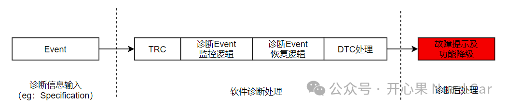
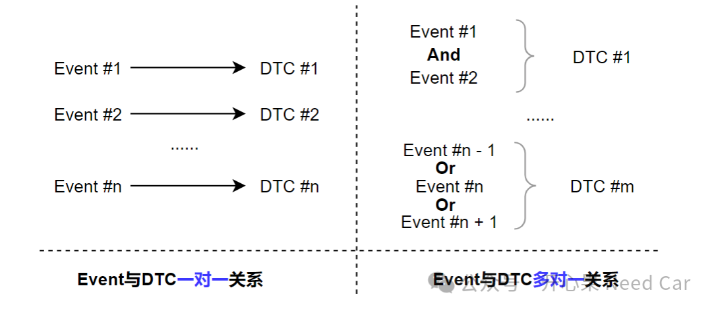

开心果 Need Car · 2024-02-29T06:56:00+08:00 · 微信原文
作为一名一线“排雷”的工程师，常常会碰到一些棘手bug，面对这些bug，时常会面对没有有效数据分析，无法复现问题的窘境。这样的工况，工程师的内心估计是万马奔腾的。当然，从整车角度看，也不必因为一个问题而如临大敌。试问，哪家OEM的哪个车型没有bug（可以去4S店读一下DTC，Diagnostic Trouble Code）？谁又不是为了抢占市场，带着一定问题推向市场的呢......所以，即使问题难搞，只要我们心生敬畏，干就是了。
从本文开始，将一些个人处理DTC问题的经验和思考做一个系列整理，希望这些经验和思考可以加速大家对问题的判断和解决。
1、诊断流程
我们知道：为了确保车辆运行的稳定性，在车辆启动、运行的过程中，需要对车辆状态进行监控，当监控到车辆潜在或者已经确认的故障时，需要及时提示驾驶人员（eg：指示灯或者文言提示）。如果故障危及驾/乘人员的人身安全，需要执行一些必要的安全措施（eg：限速、限扭等），同时，还需存储故障发生时的一些关联信息，以便于售后排查问题。
将如上诊断处理流程归纳，可分为3个阶段（诊断信息输入、软件诊断处理、诊断后处理），示意如下：

2、诊断需求信息输入
（一）车辆诊断（Diagnostic），在诊断什么？
在Autosar中，有一个模块叫DEM（Diagnostic Event Manager，诊断事件管理）。通过这个模块名称，其实不难看出，车辆诊断的实质是针对Event诊断。怎么去理解Event？举例：KL30电压过高（＞24V）可以看作一个事件，KL30电压过低（＜6V）可以看作一个事件，收不到某帧报文可以看作一个事件...
所以，搞诊断的第一件事就是要明确诊断的Event，即：哪些事件需要被监控。Event怎么来的呢？具体到每一个Event，往往与所使用的物理器件有关，物理器件（比如：压力传感器驱动芯片）一般会对应一个规范（Specficication），Specficication会给出器件的故障条件，eg：欠压、过压、过温，这些故障条件也就是需要被监控的Event。对于不同的控制器，包含的器件数量不同，因此，需要监控的Event数量也将有所不同，而Event与DTC之间可以是一对一或者多对一的关系，因此，不同控制器关联的DTC个数也会有所不同，示意如下：

Event与DTC一对一容易理解，如何理解多对一呢？举例：需要对某个外设驱动芯片进行监控，而该驱动芯片存在多种类型的故障事件，eg：过压（Event1）、欠压（Event2）、过温（Event3）、同步错误（Event4）...诊断需求中，分配了一个DTC号（eg：0xB01234）对应该外设驱动故障，当任何一个故障事件（Or关系）发生时，均触发0xB01234，这就是多对一。这个例子属于事件Or关系触发DTC，还有就是事件And关系触发DTC，即：多个事件需要同时满足才触发DTC。
（二）诊断Event需求沟通有难度
虽有如上的困难，甚至更多的困难点，但是，这些都不应是为bug问题开脱的依据。而应是我们排查DTC问题追溯的源，即：搞清楚被控（诊断）对象（Event）是谁！
往期精彩回顾